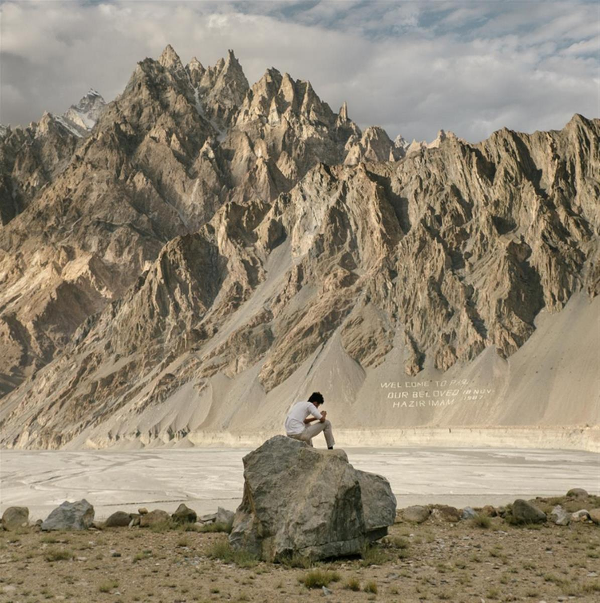
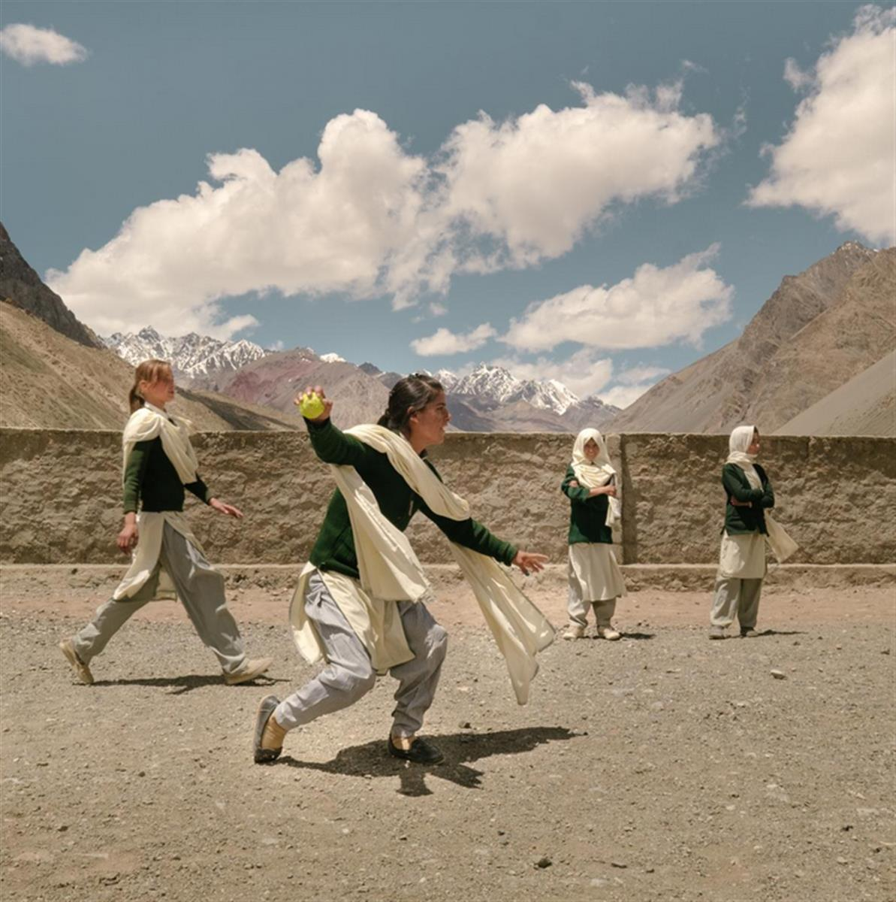
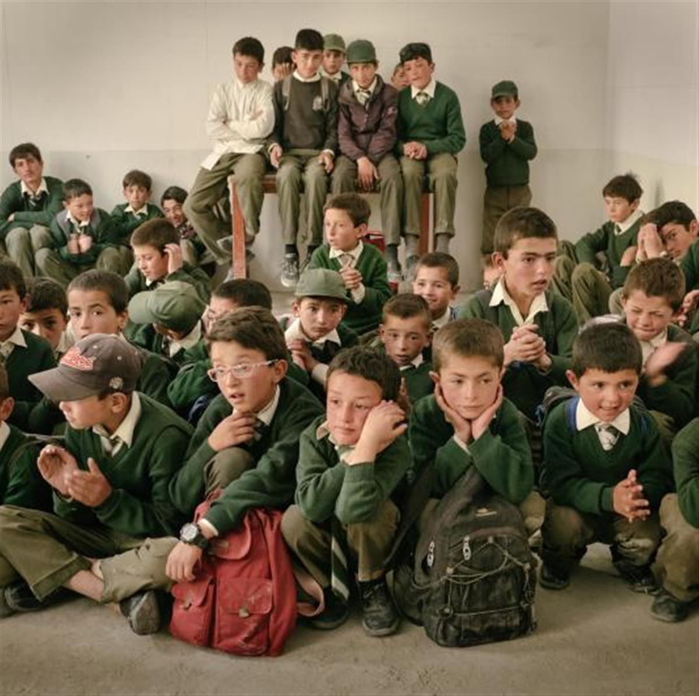
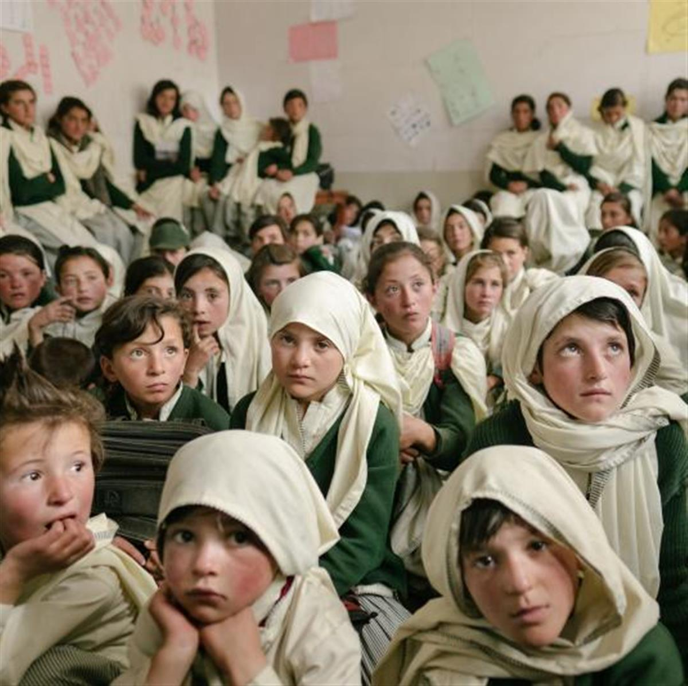

Photos and story by Matthieu Paley
Photos and story by Matthieu Paley
National Geographic. Published October 24, 2016

Photograph by Matthieu Paley, National Geographic
Above the village of Passu, a teenager checks his Facebook. Many residents here are Ismaili, followers of a moderate branch of Islam. A sign on the mountain slope commemorates the time in 1987, when the Ismaili imam, the Aga Khan, visited the remote region.
Over the years, a mountainous region in Pakistan has become my second home. I’ve seen firsthand how global events have hurt locals’ livelihoods and how technology has challenged the meaning of tradition.
PASSU, Pakistan—Sajid Alvi is excited. He just got a grant to study in Sweden.
“My Ph.D. is about friction in turbo jet engines,” Alvi says. “I will work on developing new aerospace materials—real geeky stuff!”
Alvi’s relatives have come to bid him farewell as he prepares to leave his mountain village and study in a new country, some 3,000 miles away.
“We will see you again,” one of them says as they hang out in the potato field in front of Alvi’s house. “You know you won’t get far with a long beard like that. You look like Taliban!”
Alvi, dressed in low-hanging shorts and a Yankees cap, is far from a fundamentalist: He’s Wakhi, part of an ethnic group with Persian origins. And like everyone else here, he is Ismaili—a follower of a moderate branch of Islam whose imam is the Aga Khan, currently residing in France. There are 15 million Ismailis around the world, and 20,000 live here in the Gojal region of northern Pakistan

Photograph by Matthieu Paley, National Geographic
Girls play a game of cricket during school break. In the distance, a high-altitude trail leads into Afghanistan’s Pamir Mountains.

Photograph by Matthieu Paley, National Geographic
At a school assembly in the Zood Khun village, the boys' class discusses an upcoming excursion to the edge of Chapursan Valley.

Photograph by Matthieu Paley, National Geographic
Education is a cornerstone of Ismaili culture, especially for girls.
I’ve been visiting Gojal for 17 years, and I’ve watched as lives like Alvi’s have become more common here. Surrounded by the mighty Karakoram Range, the Ismailis here have long been relatively isolated, seeing tourists but little else of global events. But now, an improved highway and the arrival of mobile phones have let the outside world in, bringing new lifestyles and opportunities: Children grow up and head off to university, fashions change, and technology reshapes tradition. Gojal has adjusted to all of this, surprising me every time I return by showing me just how adaptable traditions can be.
With these photos, I hope to add nuance to our understanding of Pakistan, a country many Westerners associate with terrorism or violence. People have suffered from this reputation, and many feel helpless in trying to change it. The Pakistan I’ve seen is different from that popular perception. I returned there this summer with my family and focused my attention on a young and forward-thinking community in Gojal, a place I know well.
READ MORE: NATIONAL GEOGRAPHIC
SOURCE: NATIONAL GEOGRAPHIC